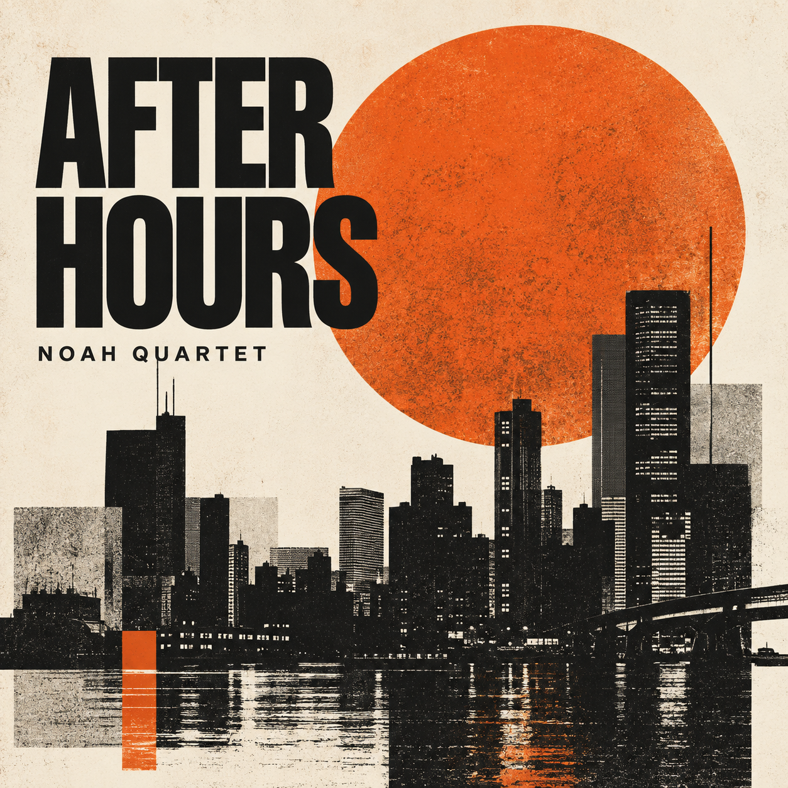
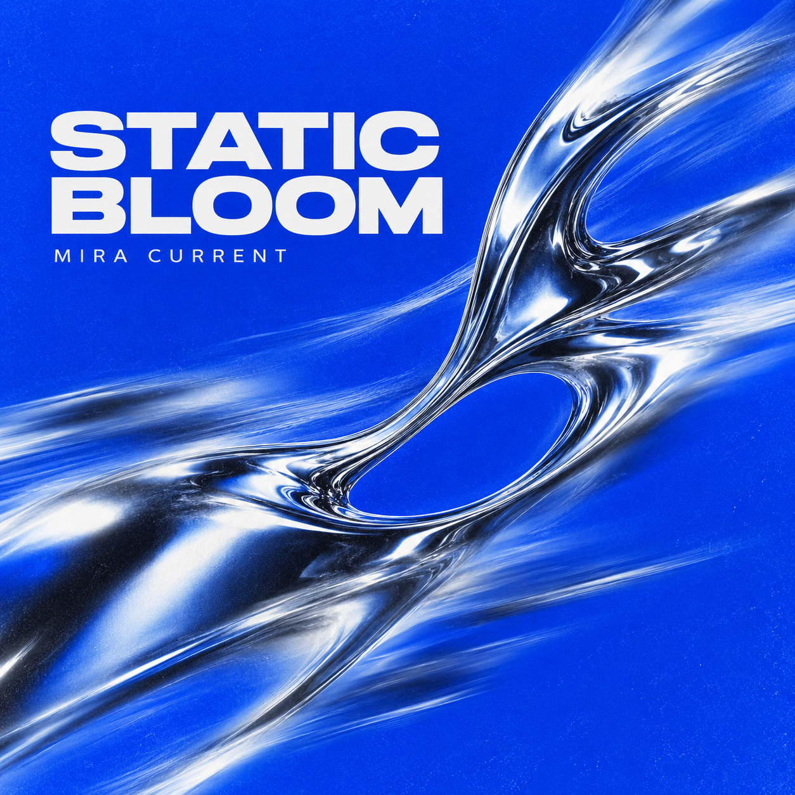
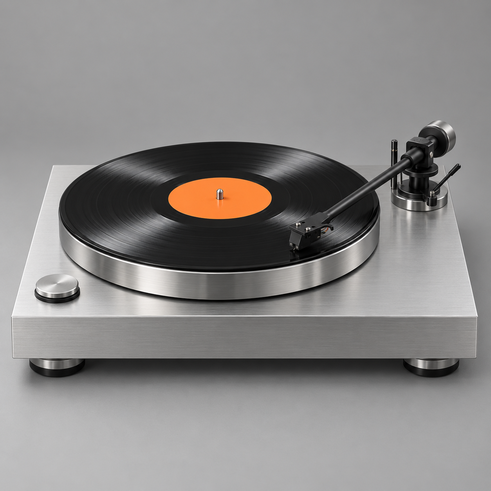
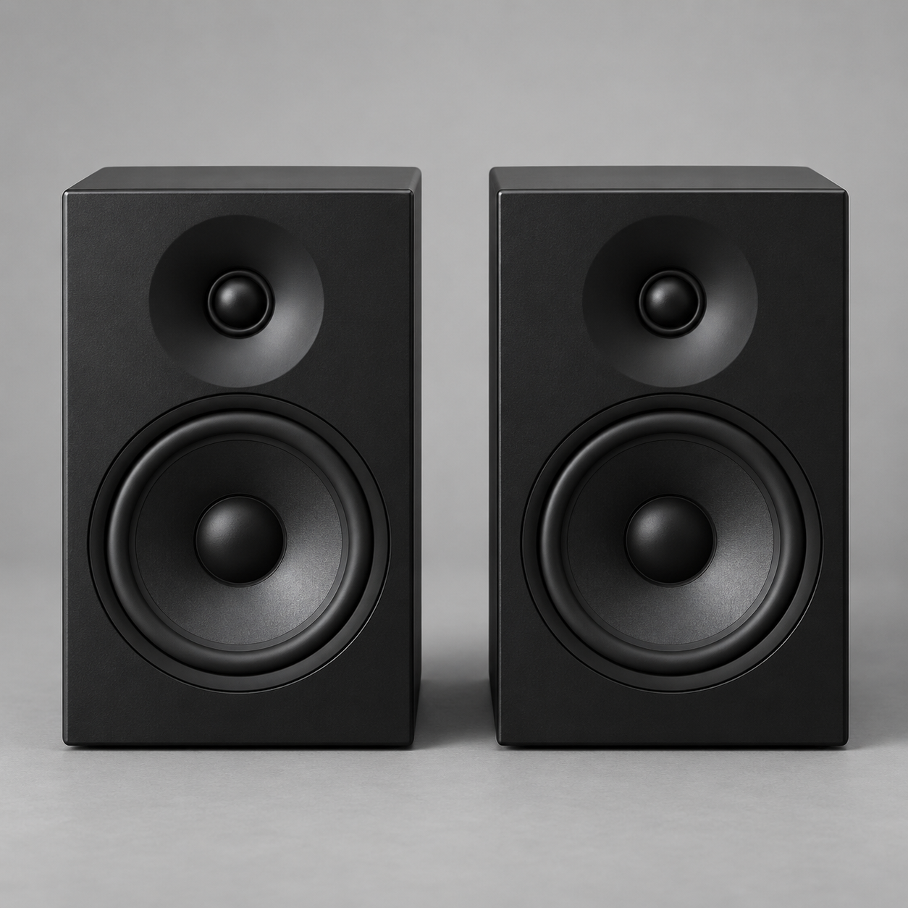

FEATURED PRESSING
THIS WEEKAT SIDE B
MODERN JAZZ · LP
NOAH QUARTET

NEXT IN THE CRATE

JUST LANDED
BROWSE BY SOUND
STAFF PICK / 04
極簡鋼琴、潮汐般的合成器與大段留白。適合關掉主燈，讓房間只剩下唱盤的轉速。
— SIDE B 選片室
LISTENING OBJECTS

